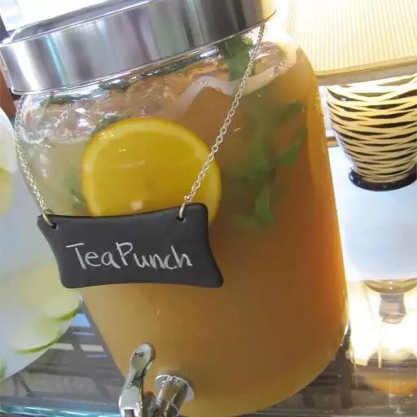

Tea Punch

A different twist to a standard punch. Brewed tea is mixed with orange juice, pineapple juice, lemonade and ginger ale.
Ingredients
- 1 cup white sugar
- 1 cup strong brewed black tea
- 4 cups orange juice
- 4 cups pineapple juice
- 4 cups prepared lemonade
- 1 (2 liter) bottle ginger ale, chilled
Steps
- In a pitcher, combine sugar and tea. Stir until sugar is dissolved. Stir in orange juice, pineapple juice and lemonade. Chill in refrigerator for 4 hours.
- Just before serving, pour chilled juice mixture into a punch bowl and stir in ginger ale.